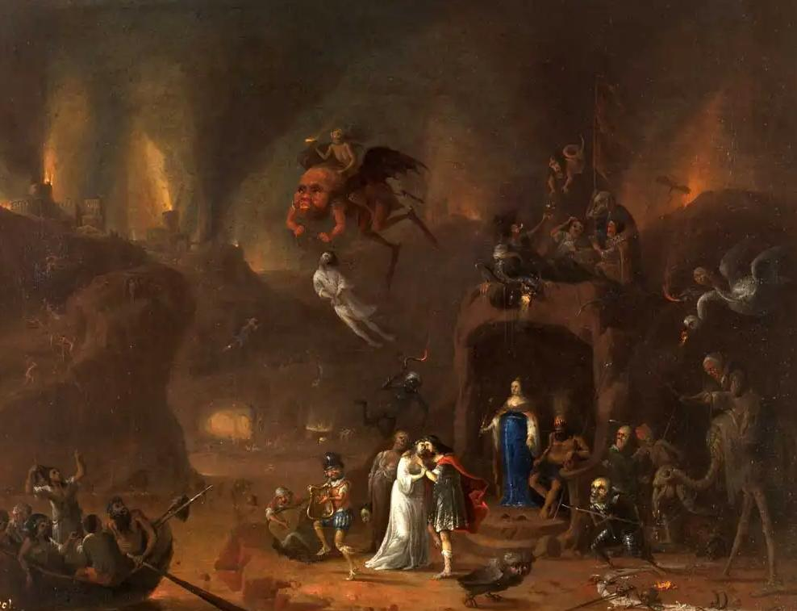

Um dia Orfeu se apaixonou por uma ninfa chamada Eurídice, que logo retribui seu amor. Eles estavam tão loucamente apaixonados que logo se casaram, numa cerimônia celebrada por Himeneu, o deus grego do casamento. No entanto, o deus profetizou que a felicidade dos dois amantes tinha prazo de validade.
 Certo dia, o deus das Abelhas Aristeu, notou a beleza de Eurídice e a quis para si. Ele se escondeu nos arbustos e esperou por ela. O plano era matar Orfeu e tomar Eurídice, quando Orfeu e Eurídice se aproximaram, Aristeu saltou, mas não conseguiu matar Orfeu. Em vez disso, Orfeu agarrou Eurídice e eles começaram a correr pela floresta para longe de Aristeu. Enquanto eram perseguidos, Orfeu segurava a mão de Eurídice, até que ela escorregou, quando ele se virou, viu que Eurídice havia sido ataca por uma cobra venenosa. Orfeu não conseguiu salvá-la e Eurídice desceu ao Mundo dos Mortos.
Após a morte de Eurídice, Orfeu ficou arrasado. Sem ela, sua vida não tinha sentido e decidiu que estava pronto para fazer o que fosse preciso para recuperar sua amada. Ele então pegou sua lira e foi resgatá-la no Submundo, para chegar ao Hades, Orfeu tocou sua música e convenceu Caronte, o barqueiro que transportava as almas, a conduzi-lo pelo Rio Estige pelo mundo dos mortos. Depois, tocou sua lira e colocou Cérbero, o cão de três cabeças, guardião da entrada do Submundo, para dormir, no caminho enctrou Narciso preso observando seu propio reflexo,e tocou para ver se trazia paz a alma de Narciso, Ele então começou a vagar entre as almas dos mortos até chegar aos tronos de Hades e Perséfone, o rei e a rainha do Submundo.
Quando lhe perguntaram o que procurava, Orfeu tocou sua lira e cantou sobre seu amor por Eurídice e sua trágica morte, sobre sua tristeza e como desejava ter sua esposa de volta. sua música tocou até mesmo o coração de Hades, que mesmo contrariado, escutou os clamores de sua esposa, Perséfone, o rei dos mortos concordou em deixar Orfeu levar sua esposa de volta ao mundo dos vivos. Mas sob uma condição: Orfeu deveria conduzir Eurídice para fora do submundo sem olhá-la,toca-la ou falar com ela até alcançarem a luz do mundo superior.
Orfeu ficou muito feliz por seu plano ter funcionado e começou a liderar Eurídice para fora do Hades. Enquanto se aproximavam do mundo superior, Orfeu podia ouvir a terra dos vivos acima dele e não conseguia conter sua alegria. O herói finalmente entrou na luz do mundo superior e se virou para abraçar sua esposa, mas ela ainda não havia saído completamente do Submundo. Assim, Eurídice retornou ao mundo dos mortos, condenada para sempre!
partir de então, o músico de coração partido vagava desorientado, dia após dia, noite após noite, em total desespero. Suas canções, outrora alegres, agora eram extremamente tristes. Sua dor era tamanha que ele se absteve de contato com qualquer outra mulher. Dessa forma, ele foi atacado por um grupo de mulheres iradas, furiosas por seu desprezo por elas. As mulheres o mataram, cortaram seu corpo em pedaços e os jogaram com sua lira em um rio. As Musas se apiedaram dele e juntaram suas partes, lhe oferecendo uma cerimônia funerária adequada. Com isso, sua alma desceu ao Hades, onde finalmente se reuniu com sua amada Eurídice.
fontes https://jafetnumismatica.com.br/mito-de-orfeu-e-euridice/